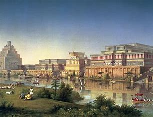

.png)
üìú Estructura de la Historia de los Asirios
Orígenes de los Asirios:
Los Asirios fueron una civilización que surgió en Alta Mesopotamia, una región ubicada entre los ríos Tigris y Éufrates, en el norte de la actual Irak. Su historia comienza alrededor del III milenio a.C., cuando un grupo de comerciantes semitas se estableció en la ciudad de Assur, que más tarde se convertiría en el centro de su imperio. Inicialmente, los Asirios eran un pueblo comercial, con fuertes lazos con Anatolia y otras regiones cercanas. Sin embargo, con el tiempo, su enfoque cambió hacia la expansión militar, lo que los llevó a convertirse en una de las civilizaciones más poderosas del mundo antiguo.
Fundación de Assur
La ciudad de Assur, fundada alrededor del 2600 a.C., fue el núcleo de la civilización asiria. Su nombre proviene del dios Assur, la deidad principal de los Asirios, quien era considerado el protector del pueblo y su expansión. Durante sus primeros siglos, Assur prosperó gracias al comercio con otras ciudades mesopotámicas y con Anatolia. Los mercaderes asirios establecieron colonias comerciales en lugares como Kanesh, en la actual Turquía, lo que les permitió acumular riqueza y desarrollar una economía sólidaPrimeros Reyes y Expansión Inicial
El primer monarca conocido de Asiria fue Shamshiadad I (1813-1760 a.C.), quien logró dominar el norte de Mesopotamia. Sin embargo, su hijo fue derrotado por el rey Hammurabi de Babilonia, lo que debilitó temporalmente el poder asirio. A pesar de estos desafíos, los Asirios continuaron expandiéndose y desarrollando una estructura política y militar avanzada. Con el tiempo, se convirtieron en una potencia capaz de rivalizar con Babilonia y otros reinos mesopotámicos.| Categoría | Descripción |
|---|---|
| Ubicación | Alta Mesopotamia, entre los ríos Tigris y Éufrates. Actual norte de Irak. |
| Ciudad Fundacional | Assur, establecida alrededor del 2600 a.C., centro político y religioso. |
| Dios Principal | Assur, deidad suprema de los Asirios, asociado con la expansión militar. |
| Economía Inicial | Comercio con Anatolia, agricultura y desarrollo de rutas comerciales. |
| Primeros Reyes | Shamshiadad I (1813-1760 a.C.), expandió el dominio asirio en Mesopotamia. |
| Expansión Temprana | Comenzaron como comerciantes, luego desarrollaron tácticas militares avanzadas. |
| Influencia Externa | Influencia de acadios y babilonios, conflictos con Mitani y otras potencias. |
| Legado Inicial | Desarrollo de escritura cuneiforme, templos y una fuerte identidad militar y comercial. |